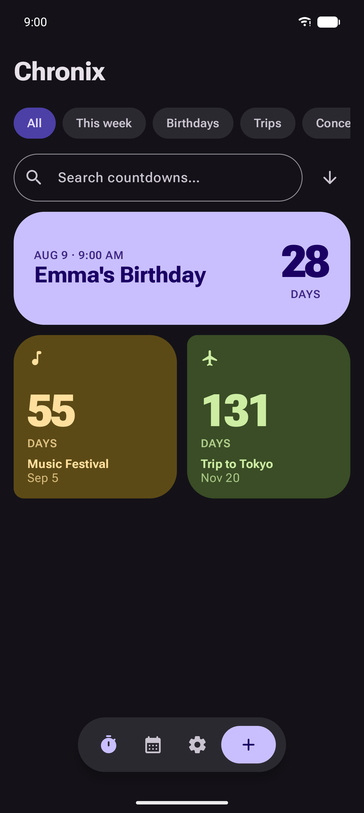
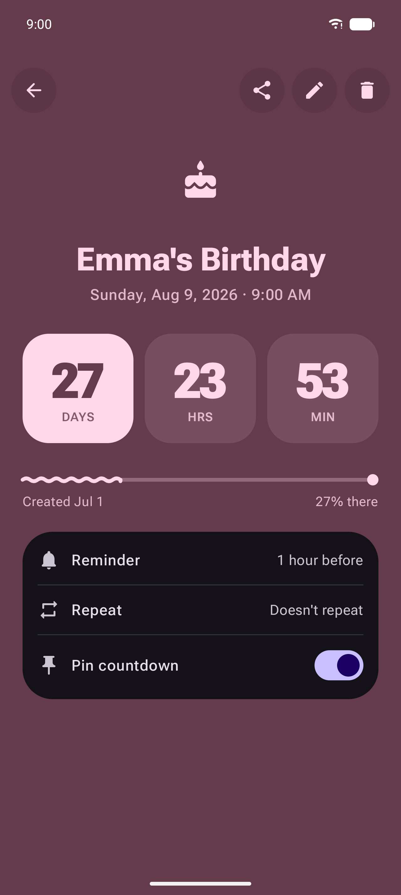

Countdown & event timer for Android — track the days to the moments that matter, right from your home screen, with calendar import and reminders.

Overview
Chronix turns important dates — birthdays, deadlines, holidays, trips — into live countdowns you can glance at any time. Add events by hand or import them straight from your device calendar, pin them to your home screen as widgets, and get a reminder before they arrive. Everything is stored locally on your device.

Architecture
Chronix is engineered on Clean Architecture with a fully modularized, feature-based structure. Build logic is centralized through Gradle Convention Plugins and a Version Catalog, keeping every module consistent and duplication-free. Navigation uses the type-safe Navigation3 library through a custom NavigationManager.
Tech Stack